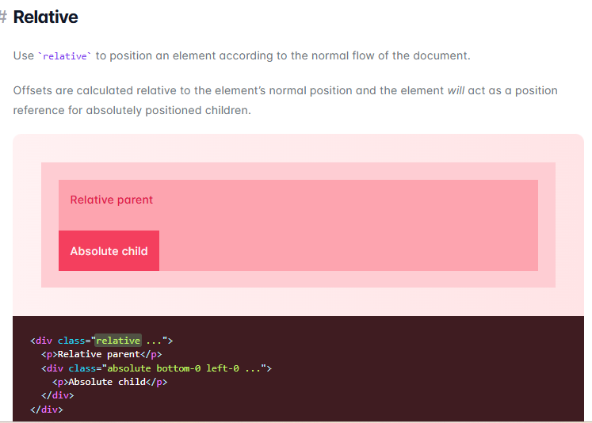
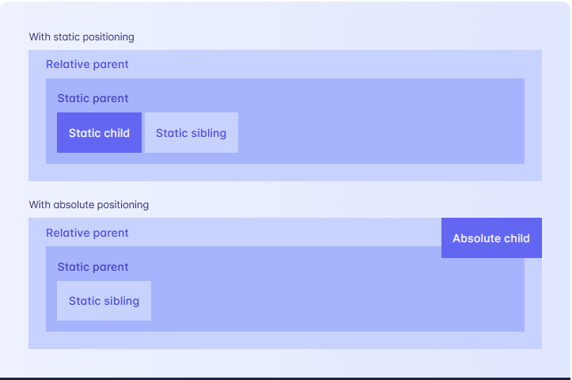

Relativ, bir nesnenin hareketi veya konumu diğer bir nesneye göre tanımlandığında ortaya çıkan kavramdır.
| Property | Description |
|---|---|
| static | Varsayılan değer. Eleman normal belge akışına göre konumlandırılır. |
| fixed | Eleman, görüntü penceresine göre konumlandırılmıştır. |
| absolute | Element, en yakın konumlanmış ataya göre konumlandırılır. |
| relative | Eleman normal konumuna göre konumlandırılır. |
| sticky | Eleman, normal akışta konumlandırılır, ancak belirli bir kaydırma noktasına ulaşıldığında yapışkan hale gelir. |
Örneğin, bir div elementi "relative" olarak konumlandırıldığında, bu element normal akışta bulunduğu yerde kalır ancak "top", "left", "bottom" ve "right" gibi özelliklerle hareket ettirilebilir. Diğer yandan, "absolute" olarak konumlandırılan bir element, en yakın konumlanmış ataya göre hareket eder ve normal akıştan çıkarılır.

